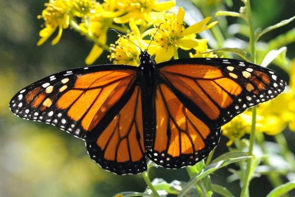
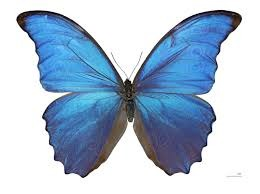

Mariposa
La mariposa es un insecto volador perteneciente al orden Lepidoptera, caracterizado por sus cuatro alas cubiertas de escamas que reflejan colores vibrantes. Su ciclo de vida comprende cuatro etapas: huevo, larva (oruga), pupa (crisálida) y adulto. Este proceso se conoce como metamorfosis completa. Las mariposas desempeñan un papel crucial en la polinización de flores, al transferir polen mientras se alimentan de néctar. Existen más de 20,000 especies en el mundo, y muchas de ellas migran largas distancias, como la famosa mariposa monarca, que viaja miles de kilómetros entre Canadá, Estados Unidos y México..
Mariposa azul
Puede referirse a varias especies, siendo la más conocida la mariposa Morpho azul, que habita en los bosques tropicales de América y destaca por su gran tamaño y su color azul iridiscente. Este color no es un pigmento, sino que se crea por la forma en que las diminutas escamas en sus alas reflejan la luz.
